# A tibble: 11 × 8
x1 x2 x3 x4 y1 y2 y3 y4
<dbl> <dbl> <dbl> <dbl> <dbl> <dbl> <dbl> <dbl>
1 10 10 10 8 8.04 9.14 7.46 6.58
2 8 8 8 8 6.95 8.14 6.77 5.76
3 13 13 13 8 7.58 8.74 12.7 7.71
4 9 9 9 8 8.81 8.77 7.11 8.84
5 11 11 11 8 8.33 9.26 7.81 8.47
6 14 14 14 8 9.96 8.1 8.84 7.04
7 6 6 6 8 7.24 6.13 6.08 5.25
8 4 4 4 19 4.26 3.1 5.39 12.5
9 12 12 12 8 10.8 9.13 8.15 5.56
10 7 7 7 8 4.82 7.26 6.42 7.91
11 5 5 5 8 5.68 4.74 5.73 6.89Aprendizaje Supervisado I
Métodos de predicción lineal
Grado en Ciencia de Datos Aplicada • curso 2024-2025
Empieza lo bueno…empieza la modelización
Vamos a juntar las piezas del puzzle para hacer «magia»
¡Buenas!
Correo: javalv09@ucm.es. Despacho: 722 (3ª planta).

Javier Álvarez Liébana, de Carabanchel (Bajo).
Licenciado en Matemáticas (UCM). Doctorado en estadística (UGR).
Encargado de la visualización y análisis de datos covid del Principado de Asturias (2021-2022).
Miembro de la Sociedad Española de Estadística e IO y la Real Sociedad Matemática Española.
Objetivos
.png)
Empezar a relacionar asignaturas como matemáticas, inferencia y R.
Aprender los fundamentos del aprendizaje estadístico (ahora llamado Machine Learning o data science)
Pasar de los descriptivo a lo predictivo: construir nuestros primeros modelos
Entender en profundidad el contexto de la predicción lineal.
Evaluación
- Asistencia. Se valorará muy positivamente la participación.
- Evaluación continua: 1 examen teórico a papel (30%) y 3 entregas R en clase (10%-25%-35%).
- Examen final:
- Más de 7 de continua -> podrás decidir peso del final entre 0% y 100%.
- Entre 6 y 7 de continua -> decidir peso del final entre un 30% y un 100%.
- Entre 5 y 6 de continua ->peso del final entre un 50% y un 100%.
- Entre 3.5 y 5 de continua -> peso del final entre un 70% y un 100%.
- Por debajo de 3.5 de continua -> peso del final del 100%.
Para que haga media el final debes de sacar más de un 3 sobre 10.
Planificación
Entrega I (10%): 6 de febrero.
Entrega II (25%): 15 o 22 de abril.
Teórico con papel y boli (30%): 8 de mayo.
Entrega III (35%): 13 de mayo.
Materiales
- Diapositivas: las diapositivas que usaremos en el aula a lo largo del curso, estructuradas por clases, estarán disponibles y actualizadas en https://javieralvarezliebana.es/docencia-R-supervisado-2324/diapos
En el menú de las diapositivas (abajo a la izquierda) tienes una opción para descargarlas en pdf en Tools (consejo: no lo hagas hasta el final del curso ya que irán modificándose)
Material: scripts de cada tema y materiales extras
Resúmenes de paquetes: chuletas de los paquetes en formato .pdf
Requisitos
Para el curso los únicos requisitos serán:
Conexión a internet (para la descarga de algunos datos y paquetes).
Instalar R y RStudio: la descarga la haremos (gratuitamente) desde https://cran.r-project.org/ y https://posit.co/download/rstudio-desktop/
Se darán por asumido conocimientos aprendidos de R base, tidyverse y ggplot
Se darán por asumido conocimientos aprendidos de Quarto, diapositivas en Quarto y Github. Para las entregas SOLO SE VALORARÁ la salida html correspondiente.
Recomendable: saber usar la calculadora en modo estadístico.
Planificación
Clase 1: repaso
Objetivo de la predicción lineal. Concepto de linealidad. Repaso de estadística descriptiva (23 de enero de 2025)
¿Qué es predecir?
En esta asignatura vamos a tratar principalmente lo que se conoce en el aprendizaje estadístico como predicción (continua)
Dada una variable objetivo (variable dependiente), y con la información aportada por un conjunto de variables predictoras (covariables), el objetivo será obtener una estimación/predicción lo «mejor posible» haciendo uso de un
modelo supervisado de predicción lineal (conocido como regresión lineal)
Ciencia de Datos
La ciencia de datos es precisamente la rama que integra las matemáticas, la estadística, la probabilidad, el Machine Learning e incluso el Big Data
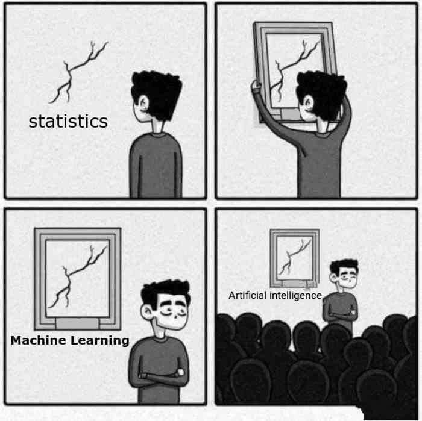¿Modelo supervisado?
modelo supervisado de predicción lineal
En esta asignatura veremos el modelo más simple de lo que se conoce como aprendizaje estadístico (Machine Learning), en concreto del conocido como aprendizaje supervisado

Aprendizaje ¿supervisado?
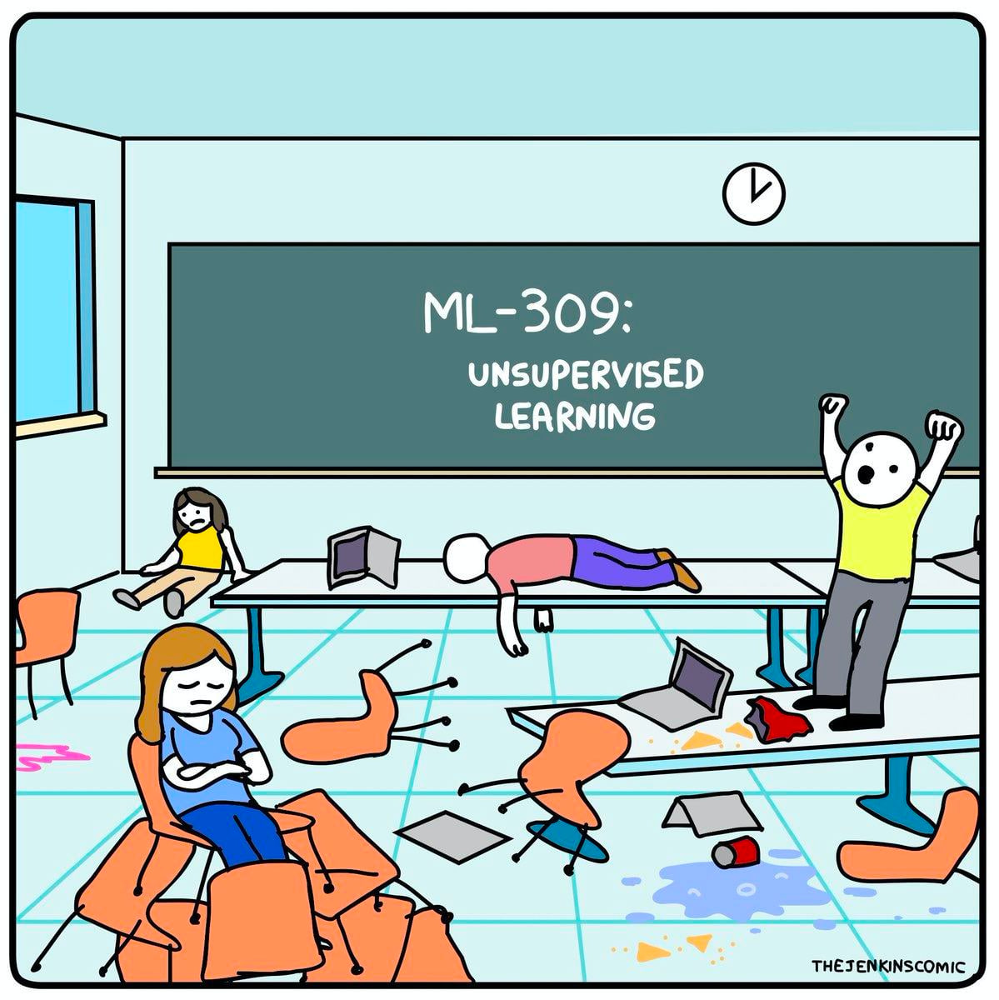Aprendizaje ¿supervisado?
En el campo del Machine Learning hay principalmente dos tipos de modelos:
- Aprendizaje supervisado: tendremos dos tipos de variables, la variable dependiente (output/target) que se quiere predecir/clasificar, normalmente denotada como \(Y\), y las variables independientes (inputs) o explicativas o predictoras, que contienen la información disponible. Ejemplos: regresión, knn, árboles, etc.

Aprendizaje ¿supervisado?
En el campo del Machine Learning hay principalmente dos tipos de modelos:
- Aprendizaje no supervisado: no existe la distinción entre target y variables explicativas ya que no tenemos etiquetados los datos, no sabemos a priori la respuesta correcta. El aprendizaje no supervisado buscará patrones basados en similitudes/diferencias. Ejemplos: PCA, clustering, redes neuronales, etc.

Modelo predictivo
Dentro del marco de un modelo de predicción supervisada tendrá siempre la siguiente forma:
\[Y = f(\mathbf{X}) + \varepsilon = f\left(X_1, \ldots, X_p \right) + \varepsilon, \quad E \left[Y | \boldsymbol{X} = x \right] =f\left(X_1, \ldots, X_p \right) \]
\(\mathbf{X}\) serán los datos
\(f(\cdot)\) será nuestro modelo, es decir, el valor esperado de \(Y\) (con la información que tenemos \(\mathbf{X}\)).
\(\mathbf{X} = \left(X_1, \ldots, X_p \right)\) serán nuestras predictoras o variables independientes
\(\varepsilon\) será el error o ruido, una variable aleatoria de media 0 \(E \left[\varepsilon | \boldsymbol{X} = x \right] = 0\) (el error debería ser reducido a algo aleatorio (irreducible), aunque en estadística SIEMPRE nos vamos a equivocar).
Clasificación vs predicción
modelo supervisado de predicción lineal
La regresión lineal se enmarca dentro del predicción supervisada
Predicción: la variable objetivo es una variable cuantitativa continua (por ejemplo, precio, glucosa, peso, etc).
Clasificación: la variable objetivo es una variable cualitativa (por ejemplo, especie de flor, ausencia/presencia de enfermedad, si/no, etc) o cuantitativa discreta (por ejemplo, número de accidentes). La etiqueta tomará un valor dentro del conjunto de modalidades permitidas, pudiendo ser binaria (si/no) o multiclase (A, B, C, D).
📚 Ver «The elements of Statistical Learning» (Hastie et al., 2008)
¿Qué es predecir?
modelo de predicción lineal
Es importante que - de momento - distingamos dos conceptos:
- Estimación: el modelo aprende de unos datos e intenta estimar dichos valores que ha usado.
- Predicción: el modelo aprende de unos datos e intenta estimar valores que el modelo no conoce.
Más adelante los llamaremos «predicción en train» y «predicción en test»
¿Qué es la linealidad?
modelo de predicción lineal
En matemáticas decimos que una función \(f(x)\) es lineal cuando se cumple:
Propiedad aditiva: \(f(x + y) = f(x) + f(y)\)
Propiedad homogénea: \(f(k*x) = k*f(x)\) (donde \(k\) es una constante en \(\mathbb{R}\)).
Ambas se pueden resumir en \(f(a*x + b*y) = a*f(x) + b*f(y)\)
En estadística llamamos modelo de predicción lineal a un modelo que usa la información de covariables \(X_1, X_2, \ldots, X_p\), de manera que su información siempre se relacionen entre sí con sumas y restas.
Ejemplos lineales: \(y = 2*x_1 - 3\) o \(y = 4 - \frac{x_1}{2} + 3*x_2\)
Ejemplos no lineales: \(y = 2*\frac{1}{x_1}\) o \(y = 4 - x_{1}^{2} - x_2\) o \(y = ln(x_1) + cos(x_2)\)
Repaso descriptiva
La estadística descriptiva es una rama de la estadística que se dedica a recolectar, organizar, presentar y analizar un conjunto de datos para describir las características y comportamientos de dicho conjunto.
Además de para conocer y entender los datos es la fase en la que detectaremos errores e incongruencias, teniendo muchas veces que hacer una depuración de datos
Recolección
La podemos hacer a través de encuestas, experimentos, observaciones, registros, etc. Lo más importante en esta etapa es que los datos sean representativos del fenómeno o población que se estudia. La rama de la estadística que se dedica a estudiar esta parte del análisis se conoce como muestreo, y es fundamental para evitar sesgos en la muestra.

Conceptos básicos
En estadística es fundamental entender los conceptos de población, muestra y variable, ya que son la base para cualquier análisis estadístico.
- Población
La población es el conjunto completo de elementos o individuos sobre los cuales se desea obtener información. En la mayoría de casos el acceso a la totalidad de la población es inviable por motivos económicos, legales o éticos, así que en la mayoría de situaciones las conclusiones deberemos sacarlas haciendo uso de una muestra.
Ejemplo: la diferencia entre censo y encuesta es que el primero recopila datos de todos los individuos de una población, mientras que el segundo trata de estimarlos o inferirlos a partir de una muestra representativa de la misma.
Conceptos básicos
Muestra: subconjunto de la población que se selecciona para su análisis con el fin de hacer inferencias o generalizaciones sobre la población completa. La muestra debe ser representativa de la población.
Muestreo aleatorio simple: cada miembro de la población tiene la misma probabilidad de ser seleccionado.
Muestreo estratificado: la población se divide en subgrupos (estratos) y se toma una muestra de cada uno.
Muestreo (no aleatorio) sistemático: se selecciona cada n-ésimo miembro de la población.
Muestreo (no aleatorio) por cuotas: se seleccionan aquellos individuos que cumplan ciertas condiciones.
Muestreo por conveniencia: se elige a los miembros que son más fáciles de acceder, aunque este método puede introducir sesgos.
Sesgos en el muestreo

Sesgo de selección: aparece cuando no se tiene en cuenta la forma en la que se han recogido los datos.
Sesgos en el muestreo
El ejemplo más famoso es el caso «Dewey defeats Truman» (Dewer derrota a Truman), el titular con el que abrió el Chicago Tribune en 1948, el mismo día en el que Truman ganó al repúblicano Dewer en las elecciones de 1948: sin esperar a los resultados, se basaron en una encuesta telefónica (sin contar con el sesgo que, en aquella época, solo la clase alta tenía teléfono).
Sesgos en el muestreo
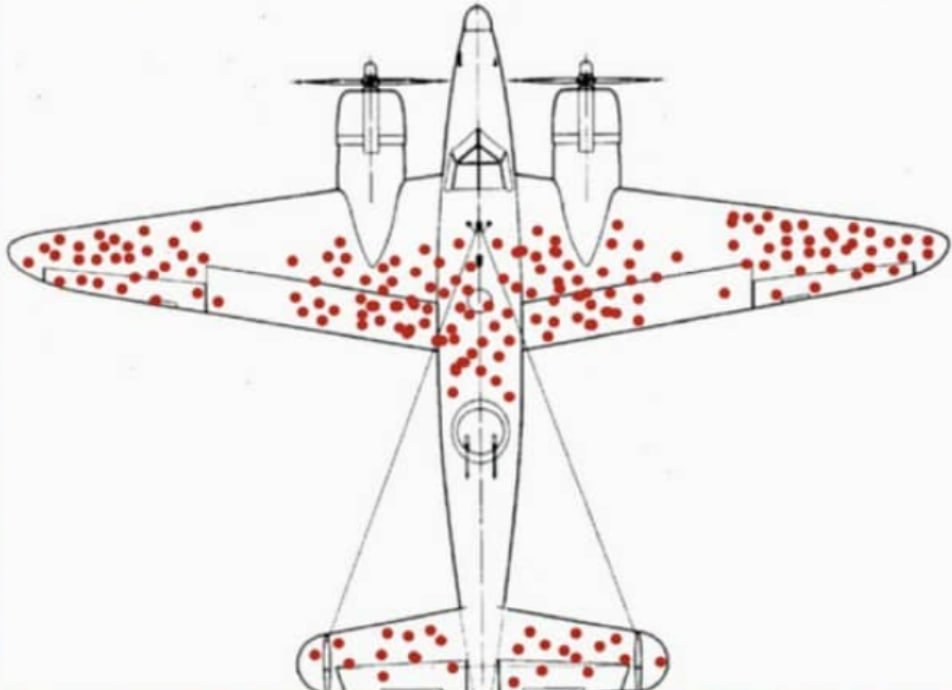¿Dónde reforzarías los aviones?
Sesgos en el muestreo
El sesgo del superviviente (un tipo de sesgo de selección) aparece cuando se toma una muestra de un fenómeno ignorando si los individuos elegidos tienen las mismas opciones respecto al mismo.
Conceptos básicos
Variable: cualquier característica o atributo que puede tomar diferentes valores entre los individuos de la población o muestra. Las variables pueden ser de varios tipos según su naturaleza:
Cualitativas (o categóricas): describen cualidades o categorías. Ejemplos:
- Nominales: no tienen un orden intrínseco (e.g., género, estado civil, religión, etc).
- Ordinales: tienen un orden intrínseco (e.g., niveles de satisfacción, grado académico, sano-leve-grave, tramo etario, tramo de ingresos, etc).
Conceptos básicos
Variable: cualquier característica o atributo que puede tomar diferentes valores entre los individuos de la población o muestra. Las variables pueden ser de varios tipos según su naturaleza:
Cuantitativas: describen cantidades y pueden ser medidas numéricamente. Ejemplos:
- Discretas finitas: toman valores finitos (e.g., número de hijos, número de visitas al médico, escala de dolor).
- Discretas infinitas: toman valores infinitos (o que se podrían considerar como tal) pero podemos enumerarlas y sabemos siempre el siguiente elemento (e.g., número de pelos de nuestra cabellera, número de personas que pueden entrar en una tienda en un periodo dado).
- Continuas: pueden tomar cualquier valor dentro de un rango (e.g., altura, peso, tiempo de espera).
Conceptos básicos
Modalidades: uno de los posibles valores que toma una variable dentro de una muestra. El conjunto de modalidades posibles que podría haber tomado (en tu población) se suele conocer también como soporte. Algunos ejemplos en función del tipo de variables son:
Cualitativa nominal (color de ojos): negro, azul y marrón (3 modalidades en esa muestra de un espectro de colores más amplio que podríamos tener como soporte).
Cualitativa ordinal (estado del paciente): sano, leve y grave (3 modalidades en esa muestra de un conjunto de opciones - por ejemplo, sano, leve, grave, UCI, fallecido - que podríamos tener).
Repaso: continua vs discreta
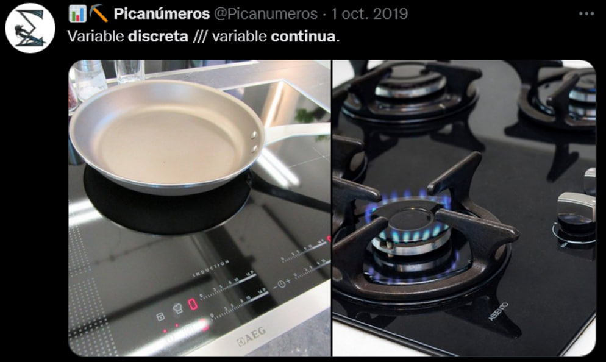Repaso: medidas de centralización
- Media: dada una muestra \(\boldsymbol{x} =\left(x_1, \ldots, x_n \right)\), la media muestral \(\overline{x}\) se define como la suma de todos los valores dividida por el tamaño muestral
\[\overline{x} = \frac{1}{n} \sum_{i=1}^{n} x_i\]
Geométricamente: es el valor «más cercano» de todos los datos a la vez (minimiza las distancias al cuadrado)
Media muestral
VENTAJAS
- Fácil de calcular y entender
- Fácil y eficiente de programar
- Siempre existe (para cuantitativas)
DESVENTAJAS
- No es un valor de los datos (la media de {1, 2, 3, 4} es 2.5)
- Poco robusta (valores atípicos le afectan mucho)
- Solo se puede definir para variables cuantitativas
Repaso: medidas de centralización
- Mediana: dada una muestra \(\boldsymbol{x} =\left(x_1, \ldots, x_n \right)\), la mediana muestral se define como el valor que es mayor o igual que al menos el 50%, y menor igual que al menos el 50% de los datos
\[Me_{x} = \arg \min_{x_i} \left\lbrace F_i > 0.5 \right\rbrace, \quad Me_x = e_{i-1} + \frac{0.5 - F_{i-1}}{F_i - F_{i-1} }a_i\]
La mediana es el valor de en medio si ordenamos los datos (y si se pueden ordenar…)
Mediana muestral
VENTAJAS
- Suele ser un valor de la muestra
- Un poco más robusta que la media
DESVENTAJAS
- Muy ineficiente (requiere un algoritmo de ordenación)
- Solo definida para cuantitativas o cualitativas ordinales
Repaso: medidas de centralización
- Moda: dada una muestra \(\boldsymbol{x} =\left(x_1, \ldots, x_n \right)\), la moda muestral se define como el valor o valores más repetidos (en caso de que existan).
\[Mo_x = \arg \max_{x_i} f_i, \quad Mo_x = e_{i-1} + \frac{d_i - d_{i-1}}{\left(d_i - d_{i-1} \right) + \left(d_i - d_{i+1} \right)}a_i\]
Gráficamente: representa el «pico» de un diagrama de barras o un histograma
Moda muestral
VENTAJAS
- Es un valor de la muestra
- Muy robusta
- Se puede calcular para cualquier cuanti o cuali
DESVENTAJAS
- No siempre existe (amodal) y pueden existir varias (bimodal, trimodal, etc)
- Poco usada en inferencia
Repaso: medidas de centralización
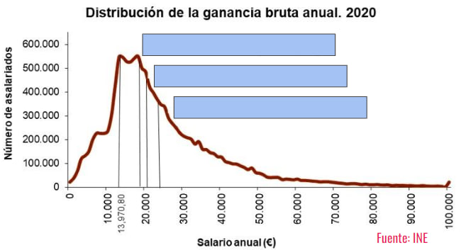¿Cuál es la mediana, la media y la moda?
Repaso: medidas de centralización

Repaso: medidas de dispersión
¿Qué tiene que ver la imagen con la dispersión?
Repaso: medidas de dispersión
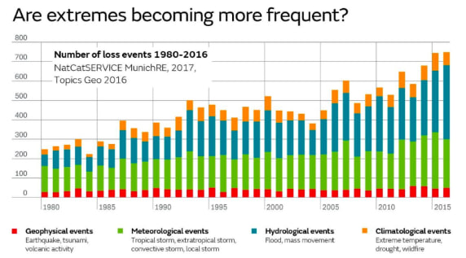El cambio climático no solo es porque aumente la temperatura media (centralización) sino por la aparición cada vez más frecuente de fenómenos extremos
Aumento de la variabilidad → aumento de la DISPERSIÓN
Repaso: medidas de dispersión
¿Cómo medir lo que se alejan los datos de la media?
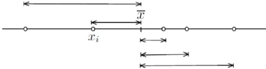
Una primera idea podría ser medir la distancia de cada dato al centro, es decir, restar cada dato de la media, y después realizar su promedio.
Wait for it
Repaso: medidas de dispersión
Imagina que tenemos la siguiente muestra \(X = \left\lbrace -5, -3, -1, 0, 1, 3, 5 \right\rbrace\).
¿Cuánto vale la media?
La media vale 0 y la distancia a ella es…la propia muestra \(\left\lbrace -5, -3, -1, 0, 1, 3, 5 \right\rbrace\). ¿Cuál es el promedio de dichas distancias?
Pues…de nuevo vale 0.
Si la dispersión es 0…¿no hay dispersión? ¿No debería de dar 0 solo cuando los datos sean constantes?
Repaso: medidas de dispersión
Para evitar que se cancelen los signos lo que haremos será calcular el promedio PERO de las distancias al cuadrado, la conocida como varianza
\[s_{x}^{2} = \frac{1}{n} \sum_{i=1}^{n} \left(x_i - \overline{x} \right)^2 = \overline{x^2} - \overline{x}^2 \]
Cuidado
Tomar el valor absoluto (para evitar que se cancelen los signos) suele ser una mala idea en matemáticas (no es derivable como función).
Repaso: medidas de dispersión
Problema: si los datos están en metros, la varianza estará en…metros cuadrados
¿Tiene sentido medir la dispersión de nuestra estatura en baldosas?

Repaso: medidas de dispersión
Para tener una medida de dispersión en las unidades de los datos calcularemos la desviación típica, como la raíz cuadrada de la varianza
\[s_{x} = \sqrt{s_{x}^{2}} = \sqrt{\frac{1}{n} \sum_{i=1}^{n} \left(x_i - \overline{x} \right)^2} = \sqrt{\overline{x^2} - \overline{x}^2}\]
Repaso: medidas de dispersión
Todavía tenemos un pequeño problema.
Imagina que queremos comparar la dispersión de dos conjuntos de datos, estaturas de personas y diámetros de núcleos de células. Y Supongamos que las medias son 170 cm y 5 micrómetros, y la desviación típica de 1 cm y 1.5 micrómetros.
¿Qué conjunto de datos es más disperso?
Para tener una medida de dispersión adimensional definiremos el coeficiente de variación
\[CV_{x} = \frac{s_{x}}{\left| \overline{x} \right|}\]
Repaso: medidas de localización
Las medidas de posición o localización nos localizan los datos, siendo valores que nos dividen un conjunto ordenado en subconjuntos del mismo tamaño (ejemplo: mediana es percentil 50).
Percentil: valores \(P_{\alpha}\) del conjunto ordenado que dejan por debajo, al menos, el \(\alpha\)% de datos y \(\alpha\)% por encima.
Decil: valores \(D_{\alpha}\) que dividen los datos en 10 partes iguales.
Cuartil: valores \(C_{\alpha}\) o \(q_{\alpha}\) que dividen los datos en 4 partes iguales.
Repaso: covarianza y correlación
¿Qué es en realidad la varianza?
La varianza es el promedio de las desviaciones al cuadrado (respecto a la media), apareciendo dos veces dicha desviación: puede ser entendida como una medida que cuantifica la relación de una variable CONSIGO MISMA
¿Y si quiésemos medir la RELACIÓN/ASOCIACIÓN de una variable X respecto a otra variable Y (en lugar de consigo misma)?
Repaso: covarianza y correlación
\[s_{x}^{2} = \frac{1}{n} \sum_{i=1}^{n} \left(x_i - \overline{x} \right)^2 = \overline{x^2} - \overline{x}^2 \quad \text{(varianza)}\]
La idea detrás de la covarianza es justo esa: sustituir una de esas desviaciones de la X por la desviación de la Y.
\[s_{xy} = \frac{1}{n} \sum_{i=1}^{n} \left(x_i - \overline{x} \right)\left(y_i - \overline{y} \right) = \overline{x*y} - \overline{x}*\overline{y}\]
Repaso: covarianza y correlación
Es importante entender algunas propiedades de la covarianza
- Signo: la covarianza puede ser tanto positiva como negativa como 0: al eliminar el cuadrado de la varianza, ya no es necesario que sea positiva
- ¿Qué cuantifica? La covarianza mide la asociación LINEAL (en torno a una recta) entre dos variables CONTINUAS
- ¿Qué dice su signo? El signo de la covarianza nos indicará la dirección de la dependencia lineal: si es positiva, la relación será creciente (cuando X crece, Y crece); si es negativa, la relación será decreciente (cuando X crece, Y decrece)
Repaso: covarianza y correlación
Al igual que pasaba con la varianza, la covarianza depende de las unidades y magnitudes de los datos, así que lo que haremos será estandarizar la covarianza. Definiremos la coeficiente correlación lineal (de Pearson) como la covarianza dividida entre el producto de las desviaciones típicas (adimensional)
\[r_{xy} = \rho_{xy} = \frac{s_{xy}}{s_x s_y}\]
Tiene el mismo signo que la covarianza (el denominador es siempre positivo) y sus valores siempre están entre -1 y 1
- más cerca de -1 o 1 → relación lineal más fuerte
- más cerca de 0 → ausencia de relación LINEAL
Repaso: covarianza y correlación

🐣 Caso práctico I: anscombe
En el paquete {datasets} se encuentra el dataset conocido como cuarteto de Anscombe, un dataset que cuenta con 4 conjuntos de datos.
Intenta responder a las preguntas planteadas en el workbook
Clase 2: asociación entre variables
Causalidad vs dependencia. Asociación continua vs continua, cualitativa vs cualitativa (28 de enero de 2025)
Estadística bivariante
Todo lo que hemos hecho con una variable podemos hacerlo también de manera bivariante considerando dos variables.
Uno de los principales objetivos de la estadística bivariante es determinar si existe relación o dependencia entre dos variables, es decir, cuando un cambio en el valor de una de ellas se asocia a un cambio en el de la otra (una dependencia estadística no implica un efecto causal).
La situación contraria, es decir, la ausencia de relación, se denomina independencia.
Tipos de análisis posibles
Una primera aproximación al estudio de dos variables será clasificar el tipo de análisis
- Cuali vs cuali:
- Resumen: tablas de contigencia (frecuencia cruzada).
- Inferencia: prueba \(\chi^2\) de independencia o test de Fisher.
- Gráficos: barras apiladas, gofres, gráficos de «flujo».
Tipos de análisis posibles
Una primera aproximación al estudio de dos variables será clasificar el tipo de análisis
- Cuani vs cuanti:
- Resumen: covarianza y correlación.
- Inferencia: test de correlación (relación lineal) y test de Kolmogorov-Smirnov (¿ambas distribuciones son iguales?). Test de igualdad de medias o igualdad de varianzas
- Gráficos: diagrama de dispersión, correlogramas, heatmaps.
Tipos de análisis posibles
Una primera aproximación al estudio de dos variables será clasificar el tipo de análisis
- Cuanti vs cuali:
- Resumen: medidas de centralización/dispersión/posición de la cuanti desagregado por los grupos de la cuali.
- Inferencia: ANOVA (una vía, dos vías, …). Test de igualdad de medias o igualdad de varianzas (desagregada por grupos)
- Gráficos: boxplots, gráficos de violín (desagregados por grupos)
Repaso: inferencia
¿Pero que era eso de la inferencia estadística? Es un conjunto de métodos y técnicas que permite inferir conclusiones sobre una población a partir de una muestra de datos.
Su propósito es utilizar la información muestral para estimar características de la población, probar hipótesis y realizar predicciones, basado en el cálculo de estadísticos
Parámetro: medida que describe una característica de la población (ejemplo: la media poblacional \(\mu\) de la estatura de las mujeres en España).
Estadístico: medida que describe una característica de la muestra (ejemplo: la media muestral \(\overline{x}\) de un conjunto de 100 mujeres).
Repaso: inferencia
Haciendo uso de estadísticos que aproximen una correcta estimación de los parámetros, los contraste de hipótesis son procedimientos estadísticos para tomar decisiones sobre la validez de una afirmación acerca de una población en función de los datos muestrales.
La idea es muy parecido a un juicio: con las pruebas (muestra) el jurado (estadístico) deben decidir sobre tu culpabilidad real (población), pudiendo ser declarado culpable o no culpable.
Este proceso implica formula
Hipótesis nula \(H_0\): es una afirmación generalmente representa una posición de no efecto o no diferencia (ejemplo: entras siendo no culpable a un juicio)
Hipótesis alternativa \(H_0\): es una afirmación que se acepta si se rechaza la hipótesis nula. Representa un efecto o diferencia (ejemplo: culpable)
Repaso: inferencia
Hipótesis nula \(H_0\): es una afirmación generalmente representa una posición de no efecto o no diferencia (ejemplo: entras siendo no culpable a un juicio)
Hipótesis alternativa \(H_1\): es una afirmación que se acepta si se rechaza la hipótesis nula. Representa un efecto o diferencia (ejemplo: culpable)
La idea es similar a la del juicio: solo vamos a rechazar \(H_0\) (es decir, aceptar \(H_1\)) si hay MUCHAS EVIDENCIAS en la muestra (solo se condena culpable a una persona si hay muchas evidencias que demuestran su culpabilidad, pero el acusado no tiene que demostrar su inocencia).
Llamaremos nivel de significancia \(\alpha\) a la probabilidad de rechazar la hipótesis nula cuando es verdadera (condenar a un inocente, conocido como error tipo I. Normalmente \(\alpha = 0.05\) aunque se pueden usar otros valores como 0.01 o 0.10 (a decidir ANTES de realizar el contraste.)
p valor
El conocido como p-valor es uno de los conceptos más importantes en estadística pero también peor usados. Puedes ver toda una revisión de qué significa y qué no en https://pmc.ncbi.nlm.nih.gov/articles/PMC4877414/
Podemos definir el p-valor como un valor continuo que nos mide la compatibilidad de los datos observados con el modelo e hipótesis asumidas: 1 indica compatibilidad perfecta y 0 incompatibilidad completa.
No repesenta la probabilidad de que la hipótesis nula sea cierta: el propio p-valor se calcula ASUMIENDO que lo es.
No representa la probabilidad de que, por azar, se produzca nada
Asociación cuali vs cuali
Una vez visto conceptos básicos de inferencia vamos a empezar por un análisis bivariante de dos variables cualitativas
El primer paso siempre será intentar resumir la información mediante el uso de tablas de contigencia, en este caso bidimensionales.
¿Cómo lo harías con tidyverse? ¿Y con R base?
Tablas de contigencia
Vamos a tomar la base de datos SatisfaccionPacientes.csv que captura datos de una encuesta de satisfacción de pacientes en un hospital
library(readr)
datos <-
read_csv(file = "./datos/SatisfaccionPacientes.csv") |>
janitor::clean_names()
datos# A tibble: 100 × 8
id edad genero estado_civil tiempo_espera grado_satisfaccion
<dbl> <dbl> <chr> <chr> <dbl> <dbl>
1 1 60 Masculino Casado 28 8
2 2 44 Femenino Soltero 22 8
3 3 43 Masculino Soltero 8 9
4 4 32 Masculino Soltero 21 8
5 5 66 Masculino Divorciado 7 10
6 6 43 Masculino Divorciado 20 8
7 7 54 Masculino Casado 18 6
8 8 55 Masculino Soltero 29 6
9 9 56 Masculino Viudo 17 9
10 10 34 Femenino Casado 34 8
# ℹ 90 more rows
# ℹ 2 more variables: numero_visitas <dbl>, estado_salud <chr>Tablas de contigencia
Para calcular una tabla bidimensional de frecuencias en tidyverse basta con indicar dos variables en count()
Tablas de contigencia
Lo habitual es mostrar esta tabla como una tabla con m filas y n columnas, siendo \(m\) el número de modalidades distintas de la primera variable (en este caso \(m=2\), femenino y masculino) y \(n\) el número de modalidades distintas de la segunda variable (en este caso \(n = 4\)).
¿Cómo hacer que la variable estado_civil pivote para pasar de estar en vertical a estar «en horizontal»? (echa un repaso a la parte de tidy data)
Tablas de contigencia
Esto se puede hacer mucho más sencillo de nuevo en R base con table()
Tablas de contigencia
Fíjate que ahora podemos normalizar las frecuencias de 3 formas: respecto al total de los datos, por filas (margin = 1) o por columnas (margin = 2).
Casado Divorciado Soltero Viudo
Femenino 0.11 0.11 0.22 0.09
Masculino 0.15 0.08 0.20 0.04
Casado Divorciado Soltero Viudo
Femenino 0.20754717 0.20754717 0.41509434 0.16981132
Masculino 0.31914894 0.17021277 0.42553191 0.08510638
Casado Divorciado Soltero Viudo
Femenino 0.4230769 0.5789474 0.5238095 0.6923077
Masculino 0.5769231 0.4210526 0.4761905 0.3076923Tablas de contigencia
Haciendo uso de las tablas anteriores intenta responder a las siguientes preguntas:
¿Qué cantidad de pacientes mujeres están solteras?
¿Qué porcentaje, de entre los pacientes hombres, están viudos?
¿Qué porcentaje, de entre los que están divorciados, son mujeres?
¿Qué porcentaje (del total de pacientes) son hombres solteros?
Tablas de contigencia
Puedes incluso visualizar dichas cantidades con geom_tile() indicándole que el relleno dependa del conteo n
💻 Tu turno
Intenta realizar los siguientes ejercicios sin mirar las soluciones
Para repasar lo aprendido vamos a poner todo en práctica con el dataset SatisfaccionPacientes.csv.
📝 Aplica el código que sea necesario para responder a estas preguntas. ¿Cuál es el tamaño muestral? ¿Cuántas variables tenemos? ¿Cuántas modalidades tenemos en la variable estado_civil (y cuantas observaciones en cada una)?
📝 Determina el tipo de variable (cuantitativa vs. cualitativa).
📝 Obten tablas de frecuencias (absoluta y relativa) en el caso de las cualitativas NOMINALES. Con ella intenta responder a las preguntas: a) ¿cuántas mujeres hay? b) ¿qué % de individuos están casados?
Código
# no podemos calcular acumulados ya que genero es nominal
datos |> count(genero) |>
rename(frecuencia_abs = n) |>
mutate(frecuencia_rel = frecuencia_abs/sum(frecuencia_abs))
# Hay 53 mujeres
datos |> count(estado_civil) |>
rename(frecuencia_abs = n) |>
mutate(frecuencia_rel = frecuencia_abs/sum(frecuencia_abs))
# Hay 26% personas casadas📝 Convierte de manera adecuada la variable genero y estado_civil a cualitativa nominal
📝 Calcula la media, mediana, rango intercuartílico y desviación típica de edad y tiempo de espera.
Código
resumen <-
datos |>
summarise(media_edad = mean(edad), sd_edad = sd(edad), mediana_edad = median(edad),
IQR_edad = quantile(edad, probs = 0.75) - quantile(edad, probs = 0.25),
# tiempo espera
media_tiempo_espera = mean(tiempo_espera), sd_tiempo_espera = sd(tiempo_espera),
mediana_tiempo_espera = median(tiempo_espera),
IQR_tiempo_espera = quantile(tiempo_espera, probs = 0.75) - quantile(tiempo_espera, probs = 0.25))📝 Repite el anterior ejercicio pero obteniendo las métricas desagregadas por sexo.
Código
resumen <-
datos |>
summarise(media_edad = mean(edad), sd_edad = sd(edad), mediana_edad = median(edad),
IQR_edad = quantile(edad, probs = 0.75) - quantile(edad, probs = 0.25),
# tiempo espera
media_tiempo_espera = mean(tiempo_espera), sd_tiempo_espera = sd(tiempo_espera),
mediana_tiempo_espera = median(tiempo_espera),
IQR_tiempo_espera = quantile(tiempo_espera, probs = 0.75) - quantile(tiempo_espera, probs = 0.25),
.by = genero)🐣 Caso práctico I: encuesta de satisfacción
Vamos a seguir poniendo en práctica lo aprendido el dataset SatisfaccionPacientes.csv
Intenta responder a las preguntas planteadas en el workbook
Asociación cuali vs cuali
Esas tablas de frecuencia serán las que usen los diferentes contrastes de asociación cuali vs cuali para decidir si hay o no dependencia.
El contraste más conocido es la conocida como prueba de \(\chi^2\) (chi-cuadrado): dada una tabla de contigencia entre dos cualitativas, el contraste compara dicha tabla con la que deberíamos obtener bajo la hipótesis nula de independencia
Vamos a hacerlo con nuestras variables genero y estado_civil
Prueba chi-cuadrado
\[H_0:~\text{genero y estado civil son independientes}\]
\[H_1:~\text{genero y estado civil son dependientes}\]
Casado Divorciado Soltero Viudo
Femenino 11 11 22 9
Masculino 15 8 20 4Si la hipótesis nula fuese cierta, ¿qué esperaríamos?
Prueba chi-cuadrado
- Elegimos uno de los factores y calculamos su proporción en la tabla general (53% vs 47% en este caso)
Prueba chi-cuadrado
- Si ambas variables fuesen independientes, en cada columna tendríamos que tener porcentajes parecidos a cuando lo hacemos sin desagregar (53% mujeres y 47% hombres). Es decir, del total de casados (26) deberíamos tener \(8.48\) mujeres y \(7.52\) hombres; del total de divorciados (19) deberíamos tener \(10.07\) mujeres y \(8.93\) hombres; y así sucesivamente. Estas frecuencias las denotaremos como frecuencias esperadas \(E_{ij}\)
\[E_{ij} = \frac{\text{suma fila i * suma fila j}}{\text{total}}\]
Prueba chi-cuadrado
- Resumimos lo que se desvía una de otra mediante el estadístico chi-cuadrado:
\[\begin{eqnarray}\chi^2 &=& \sum_{i,j} \frac{\left(O_{ij} - E_{ij} \right)^2}{E_{ij}} = \frac{(13.78 - 11)^2}{13.78} + \frac{(12.22 - 15)^2}{12.22} \nonumber \\ &+& \frac{(10.07 - 11)^2}{10.07} + \ldots + \frac{(6.11 - 4)^2}{6.11} = 2.75731\end{eqnarray}\]
- Calculamos cómo de extremo es el valor del estadístico si la hipótesis nula fuese cierta, proporcionándonos un p-valor.
Prueba chi-cuadrado
Este proceso podemos hacerlo directamente aplicando chisq.test(), indicándole las variables (o su tabla de frecuencias)
...$statistic: tenemos guardado el valor del estadístico
...$observed: tenemos guardada la tabla de frecuencias observada
Prueba chi-cuadrado
...$expected: tenemos guardada la tabla de frecuencias esperada
datos$estado_civil
datos$genero Casado Divorciado Soltero Viudo
Femenino 13.78 10.07 22.26 6.89
Masculino 12.22 8.93 19.74 6.11...$p.value: tenemos guardado el p-valor.
Prueba chi-cuadrado
¿Cómo interpretar el contraste?
Pearson's Chi-squared test
data: datos$genero and datos$estado_civil
X-squared = 2.7573, df = 3, p-value = 0.4306Como \(p.value = 0.4306 > \alpha = 0.05\), no podemos rechazar la hipótesis nula: no hay evidencias suficientes en la muestra para concluir que haya dependencia.
Prueba de Fisher
Otra alternativa es el test exacto de Fisher, una prueba estadística utilizada para determinar si hay una asociación significativa entre dos variables cualitativas especialmente útil cuando las frecuencias esperadas son bajas y tenemos dos grupos en cada cualitativa (la tabla de frecuencias es \(2 \times 2\)).
Como curiosidad dicha prueba nació cuando Fisher trataba de comprobar si una compañera, Muriel Birstol, era capaz de detectar en un té con leche si se había añadido primero el té o la leche en su taza (y del experiemnto del que nació la regla del \(\alpha = 5%\)).
Prueba de Fisher
Como hemos dicho es especialmente útil cuando tenemos solo 2 modalidades en cada cualitativa ya que nos proporciona métricas de asociación
Veamos un ejemplo con la tabla placebo_medicamento.csv
# A tibble: 33 × 3
id_paciente grupo_tratamiento observado
<dbl> <chr> <chr>
1 1 medicamento mejora
2 2 medicamento mejora
3 3 medicamento mejora
4 4 medicamento mejora
5 5 medicamento mejora
6 6 medicamento mejora
7 7 medicamento mejora
8 8 medicamento mejora
9 9 medicamento mejora
10 10 medicamento mejora
# ℹ 23 more rowsPrueba de Fisher
Fisher's Exact Test for Count Data
data: datos_placebo$observado and datos_placebo$grupo_tratamiento
p-value = 0.01336
alternative hypothesis: true odds ratio is not equal to 1
95 percent confidence interval:
1.308438 57.326435
sample estimates:
odds ratio
7.386906 Si te fijas ahora nos devuelve además un contraste de lo que se conoce como odds ratio (OR: razón de probabilidades)
alternative hypothesis: true odds ratio is not equal to 1
Métricas de asociación
medicamento placebo
mejora 13 6
no mejora 3 11La interpretación de Odds ratio (OR) es cuantificar la asociación entre dos variables respecto a una asociación espúrea ¿Cuánto mejoran los que tomaron medicamento respecto a una posible mejora basal (aleatoria) del placebo?
- Ratio de mejora en tratados: \(13/3 = 4.33333\)
- Ratio de mejora en placebo: \(6/11 = 0.54545\)
\[OR = \frac{13/3}{6/11} = \frac{13*11}{6*3} = 7.94\]
Los pacientes sometidos a tratamiento mejoran 7.9 veces más si el placebo mejorase por azar.
Métricas de asociación
medicamento placebo
mejora 13 6
no mejora 3 11Otra de las métricas habituales es la conocida como razón de prevalencias (Risk Ratio, RR) que nos proporciona un ratio entre la probabilidad de prevalencia de un evento en dos grupos.
- Prevalencia de mejora en tratados: \(13/(3+13) = 0.8125\)
- Prevalencia de mejora en placebo: \(6/(11+6) = 0.35294\)
\[RR = \frac{13/(3+13)}{6/(11+6)} = \frac{13*11}{6*3} = 2.30208\] Los pacientes sometidos a tratamiento tienen más del doble de «riesgo» de mejorar que los pacientes con placebo.
Métricas de asociación
Ambas métricas podemos estimarlas también con el paquete {epitools}
library(epitools)
OR <- oddsratio(datos_placebo$observado, datos_placebo$grupo_tratamiento)
OR$measure odds ratio with 95% C.I.
Predictor estimate lower upper
mejora 1.000000 NA NA
no mejora 7.201088 1.553915 44.13078- Si \(OR = 1\) no hay asociación entre las variables.
- Si \(OR > 1\) hay una asociación positiva, es decir, la exposición está asociada con un mayor riesgo.
- Si \(OR < 1\) hay una asociación negativa, es decir, la exposición está asociada con un menor riesgo.
Métricas de asociación
risk ratio with 95% C.I.
Predictor estimate lower upper
mejora 1.000000 NA NA
no mejora 2.488095 1.215737 5.092068- Si \(RR = 1\) no hay diferencias en el riesgo entre los grupos.
- Si \(RR > 1\) el grupo expuesto (en este caso medicado) tiene mayor riesgo (en este caso de mejorar)
- Si \(RR < 1\) el grupo expuesto tiene menor riesgo.
Gráficos de barras
Volvamos al ejemplo de encuesta de satisfacción: vamos a intentar relacionar las dos variables cualitativas genero y estado_civil para complementar el análisis numérico realizado (amén del geom_tile() que hemos hecho para visualizar la tabla de frecuencias)
Sabemos realizar un diagrama de barras de cada una por separado, ¿cómo incluir la información de ambas con geom_bar()
Piensa cómo hacerlo recordando que geom_bar() solo admite una coordenada x = ... o y = .... ¿Cómo incluir la info de otra variable que no sea en x o y?
Gráficos de barras
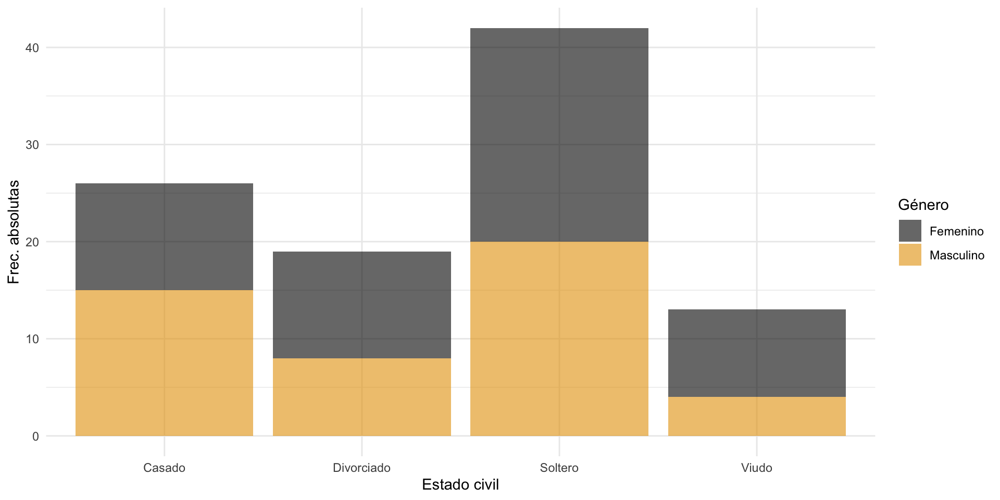Gráficos de barras
La función geom_bar() nos permite jugar un poco con el tipo de barras, que por defecto las muestra stacked (apiladas). Dicho ajuste podemos cambiarlo con el argumento position: si position = "dodge" las muestra de manera agrupada una detrás de otra.
Gráficos de barras
La mejor opción para visualizar si hay asociación es que cada barra de estado civil representa el total y nos muestre el % de cada sexo en cada una: si fuesen independientes, el reparto por sexo en cada barra debería ser similar. Lo haremos con position = "fill"
Gráficos de barras
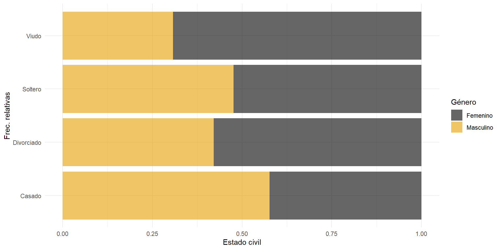💻 Tu turno
Intenta realizar los siguientes ejercicios sin mirar las soluciones
📝 Carga el fichero placebo_medicamento_completo.csv donde tenemos guardado los niveles de colesterol antes y después de un tratamiento: a 76 personas se les dio un medicamento para bajarlo y a 24 personas placebo.
📝 Añade una nueva variable dicotómica a los datos que nos guarde mejora si el paciente mejoró tras el tratamiento y no mejora en caso negativo
📝 Visualiza ambas variables (mejora y tratamiento) a la vez con un diagrama de barras de manera que podamos observar indicios de una posible independencia o dependencia entre ambas. Hazlo antes a papel y boli si lo necesitas
Código
# así pintaríamos en cada barra de tratamiento los mejora o no mejora
ggplot(datos) +
geom_bar(aes(x = tratamiento, fill = mejora), alpha = 0.6) +
ggthemes::scale_fill_colorblind() +
theme_minimal()
# pero dado que tienes más tratados que del grupo control
# no permite comparar bien así que igualamos las barras
# para que cada barra sea el 100% de su categoría
ggplot(datos) +
geom_bar(aes(x = tratamiento, fill = mejora), alpha = 0.6,
position = "fill") +
ggthemes::scale_fill_colorblind() +
theme_minimal()
# Parece evidente visualmente que hay una diferencia entre mejora y no mejora
# en cada barra📝 Calcula la tabla de frecuencias absoluta y relativa que consideres necesarias para responder a las siguientes preguntas:
¿Cuántas personas de las tratadas con medicamento no mejoraron?
¿Qué de personas del total del estudio acabaron mejorando habiendo tomando placebo?
¿Qué % de personas tomó medicamentos entre los que no mejoraron?
¿Qué % de personas de los que tomaron medicamento mejoraron?
Código
table(datos$tratamiento, datos$mejora)
prop.table(table(datos$tratamiento, datos$mejora))
prop.table(table(datos$tratamiento, datos$mejora), margin = 1)
prop.table(table(datos$tratamiento, datos$mejora), margin = 2)
# 9 personas de las tratadas con medicamento no mejoraron
# 9% del total de personas mejoraron y tomaron placebo
# 37% de los que no mejoraron habían tomado la medicación
# 88.1% de los que tomaron medicamento mejoraron📝 Para confirmar y cuantificar las evidencias que ya tenemos, vamos a realizar un contraste de hipótesis. Realiza la prueba de chi-cuadrado e interpreta el resultado con \(\alpha = 0.05\).
Realiza la prueba de chi-cuadrado y Fisher e incluye los p-valores en una tabla resumen haciendo uso de tidyverse. Exporta a un
.csvdicha tabla resumen
📝 Realiza la prueba de Fisher y mira la salida completa. Interpreta la salida, no solo del contraste sino de los odd ratio.
Fisher's Exact Test for Count Data
data: datos$tratamiento and datos$mejora
p-value = 2.519e-06
alternative hypothesis: true odds ratio is not equal to 1
95 percent confidence interval:
3.722458 42.096028
sample estimates:
odds ratio
11.95213 🐣 Caso práctico II: bronquitis y tabaco
Vamos a cargar el archivo de datos fumadores.csv donde tenemos datos de 96 pacientes sobre sí o fuman y quienes han desarrollado o no bronquitis.
# A tibble: 96 × 3
id fumador estado
<dbl> <chr> <chr>
1 1 sí bronquitis
2 2 sí bronquitis
3 3 sí bronquitis
4 4 sí bronquitis
5 5 sí bronquitis
6 6 sí bronquitis
7 7 sí bronquitis
8 8 sí bronquitis
9 9 sí bronquitis
10 10 sí bronquitis
# ℹ 86 more rows
Intenta responder a las preguntas planteadas en el workbook
🐣 Caso práctico III: salud mental
Esta la base de datos datos_salud_mental.csv tenemos información recopilada de 100 pacientes que acuden a un centro de salud mental. Se quiere realizar un estudio para ver el impacto que tienen distintas características sobre la ansiedad y depresión en estos 100 pacientes. Los datos incluyen una variedad de variables relacionadas con la salud mental, así como características demográficas y de estilo de vida.
Intenta responder a las preguntas planteadas en el workbook
Asociación cuanti vs cuanti
Como decíamos, la idea detrás de la covarianza es una “varianza” entre dos variales (la varianza es una covarianza de una variable consigo misma), midiendo el promedio de lo que se desvía cada una respecto a su media
\[s_{xy} = \frac{1}{n} \sum_{i=1}^{n} \left(x_i - \overline{x} \right)\left(y_i - \overline{y} \right) = \overline{x*y} - \overline{x}*\overline{y}\]
Correlación lineal
Vamos a practicar una vez más como hacerlo a mano con el siguiente ejercicio.
Correlación lineal
En la tabla inferior se han recopilado (del 2013 al 2022) la temperatura media en el mes de abril en Madrid (variable X, en ºC) y el número de días (variable Y) en el que el nivel de ozono superó las 0.20 ppm (partes por millón)
- ¿Cuál fue media de días en los que se superó umbral de ozono de 0.20 ppm?
- ¿Cuál fue media de días en los que se superó umbral de ozono en los años que la temperatura media en marzo superó los 17.4ºC?
- ¿Cuál es su covarianza?
Correlación lineal
Repite el ejercicio con pocas líneas de código R
- ¿Cuál fue la media de días en los que se superó el umbral de ozono de 0.20 ppm?
- ¿Cuál fue la media de días en los que se superó el umbral de ozono en los años que la temperatura media en marzo superó los 17.4ºC?
- ¿Cuál es su covarianza?
Correlación lineal
Realiza lo que consideres tanto a mano como en R
- ¿Existe alguna relación de dependencia entre las variables? ¿De qué tipo? ¿Cómo de fuerte o débil es dicha relación? ¿En qué dirección es dicha relación?
\[s_{xy} = \frac{1}{n} \sum_{i=1}^{n} \left(x_i - \overline{x} \right)\left(y_i - \overline{y} \right) = \overline{x*y} - \overline{x}*\overline{y}\]
\[r_{xy} = \rho_{xy} = \frac{s_{xy}}{s_x s_y}\]
Correlación lineal
No sé si te has fijado qué sucede cuando intentamos calcular la covarianza/correlación de varias variables, por ejemplo vamos a calcular la (cuasi)covarianza de todas las variables numéricas de starwars.
Podemos usar la función cov() sin más, fuera de un resumen, obteniendo lo que se conoce como matriz de (cuasi)covarianzas y que tendrá un papel fundamental en estadística ya que contiene la información (= varianza) del dataset.
Matriz de covarianzas
height mass birth_year
height 957.3802 676.8867 -2164.10
mass 676.8867 46313.2034 17402.55
birth_year -2164.1002 17402.5466 28603.04Además de ser simétrica…¿qué tenemos en la diagonal?
La matriz de (cuasi)covarianzas se denota como \(\Sigma\) y sus elementos se define como \(\Sigma_{ii} = s_{x_i}^{2}\) para la diagonal y \(\Sigma_{ij} = \Sigma_{ji} = s_{x_i x_j}\) fuera de ella.
Importante
Recuerda que los softwares estadísticos nos devuelven siempre la cuasi covarianza, dividido entre \(n-1\) y no entre \(n\). La cuasivarianza y la cuasicovarianza son los mejores estimadores muestrales (insesgados) de los respectivos parámetros poblaciones
Matriz de correlaciones
De la misma manera con cor() podemos calcular la matriz de correlaciones (en este caso sin el cuasi ya que se cancelan denominadores)
La matriz de correlaciones se denota como \(R\) y sus elementos se define como \(r_{ii} = 1\) para la diagonal y \(r_{ij} = r_{x_ix_j}\) fuera de ella, y nos proporciona la dependencia lineal entre variables ya de manera estandarizada.
Matriz de correlaciones
¿Se te ocurre alguna manera de calcular la matriz de correlaciones a partir de la de covarianzas?
Correlación vs dependencia
Podemos tener variables incorreladas, con correlación nula, pero que exista dependencia entre ellas: la covarianza/correlación SOLO CAPTURA relaciones lineales, nada más.
Veamos un ejemplo sencillo con \(X = \left\lbrace -1, 0, 1 \right\rbrace\) y \(Y = X^2 = \left\lbrace 1, 0, 1 \right\rbrace\).
- La media de ambas es nula
- La media del producto es la media de \(XY = \left\lbrace -1, 0, 1 \right\rbrace\), que es de nuevo nula
- Así la covarianza \(\overline{x*y} - \overline{x}*\overline{y}\) es nula a pesar de tener la mayor dependencia posible (dependencia funcional)
Correlación vs dependencia
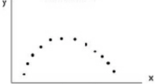En relaciones no lineales como la de la imagen, la correlación estará cercana a cero (ya que no hay relación lineal) pero existe una dependencia. Diremos que dos variables son dependientes entre sí cuando existe un patrón numérico que las relaciona
- Independencia implica incorrelación
- Incorrelación NO implica independencia
Correlación vs dependencia

Test de correlaciones
¿Pero cómo saber que la correlación observada es suficientemente pequeña para considerarse incorreladas?
Con un contraste de correlaciones haciendo uso de cor.test()
Correlación de rango
La correlación (lineal) de Pearson asume que las variables están distribuidas normalmente, en caso de existir asociación tienen una relación lineal y no tienen valores atípicos.
Esto significa que ANTES de aplicar un test de correlación deberíamos de comprobar que ambas están distribuidas normalmente
Contraste de normalidad
- Antes de nada debemos de eliminar los pares con datos ausentres
Contraste de normalidad
- También podemos cotejarlo mediante una prueba de inferencia no parámetrica contastando la normalidad
library(performance)
# check_normality realiza el Shapiro test
check_normality(starwars_sin_NA$height)Warning: Non-normality of raw detected (p < .001).Warning: Non-normality of raw detected (p < .001).No deberíamos aplicar (al menos no interpretar) el test de correlaciones
Correlación de rango
Por ello existen dos alternativas: correlación de Spearman y correlación de Kendall
Ambos coeficientes cuantifican no una mera correlación lineal sino una correlación de rango: cuantifica la relación entre los distintos rankings de dos variables cuando se ordenan.
Correlación de Spearman
El [coeficiente de correlación de Spearman]{hl-yellow} cuantifica de manera no paramétrica la interdependencia entre dos variables aleatorias (tanto continuas como discretas). Cuantifica el grado de asociación monótona entre dos variables ordinales o continuas
\[\rho =1-\frac{6\sum D^{2}}{n (n^{2}-1)}\]
donde \(D\) es la diferencia entre los correspondientes estadísticos de orden de \(x - y\).
mass height
mass 1.0000000 0.7192179
height 0.7192179 1.0000000
Spearman's rank correlation rho
data: starwars$mass and starwars$height
S = 9608.4, p-value = 1.393e-10
alternative hypothesis: true rho is not equal to 0
sample estimates:
rho
0.7192179 Correlación de Spearman

Tau de Kendall
El coeficiente de correlación de Kendall (\(\tau\) de Kendall) cuantifica la asociación ordinal de variables cualitativas ordinales (o cuantis) de manera no paramétrica.
Dados \(\left(x_1, y_1\right), \ldots, \left(x_n, y_n\right)\) un conjunto de observaciones, se dice que \(\left(x_{i},y_{i}\right)\) y \(\left(x_{j},y_{j}\right)\) (con \(i < j\)) son un par concordante si el orden de clasificación coincide (\(x_i < x_j,~y_i < y_j\) o bien \(x_j < x_i,~y_j < y_i\))
\[\tau =\frac{\text{n pares concordantes} - \text{n pares discordantes}}{n \choose 2}\]
El coeficiente de Kendall suele usarse solo cuando \(n\) es pequeño y hay muchos empates (ver usos)
mass height
mass 1.0000000 0.5704061
height 0.5704061 1.0000000
Kendall's rank correlation tau
data: starwars$mass and starwars$height
z = 6.2649, p-value = 3.731e-10
alternative hypothesis: true tau is not equal to 0
sample estimates:
tau
0.5704061 Correlación general
Kendall demostró en 1970 que tanto \(\tau\) de Kendall como \(\rho\) de Spearman son casos particulares de un coeficiente de correlación general.
Si tenemos \(n\) observaciones, para cada par \(\left(x_i, y_j \right)\) podemos definir \(a_{ij}\) como un ranking en la variable \(x\) de ambas observaciones (\(a_{ij} > 0\) si \(x_i > y_j\)) y \(b_{ij}\) como un ranking en la variable \(y\) (\(b_{ij} > 0\) si \(x_i > y_j\)), entonces
\[\Gamma = \frac{\sum_{i=1}^{n}\sum_{j=1}^{n}a_{ij}b_{ij}}{\sqrt {\left( \sum_{i=1}^{n}\sum_{j=1}^{n}a_{ij}^{2} \right) \left( \sum_{i=1}^{n}\sum_{j=1}^{n}b_{ij}^{2} \right)}}\]
💻 Tu turno
Intenta realizar los siguientes ejercicios sin mirar las soluciones
Vamos a tomar de nuevo nuestros datos de satisfacción de pacientes
library(readr)
datos <-
read_csv(file = "./datos/SatisfaccionPacientes.csv") |>
janitor::clean_names()
datos# A tibble: 100 × 8
id edad genero estado_civil tiempo_espera grado_satisfaccion
<dbl> <dbl> <chr> <chr> <dbl> <dbl>
1 1 60 Masculino Casado 28 8
2 2 44 Femenino Soltero 22 8
3 3 43 Masculino Soltero 8 9
4 4 32 Masculino Soltero 21 8
5 5 66 Masculino Divorciado 7 10
6 6 43 Masculino Divorciado 20 8
7 7 54 Masculino Casado 18 6
8 8 55 Masculino Soltero 29 6
9 9 56 Masculino Viudo 17 9
10 10 34 Femenino Casado 34 8
# ℹ 90 more rows
# ℹ 2 more variables: numero_visitas <dbl>, estado_salud <chr>📝 Obtén la matriz de correlaciones de Pearson haciendo uso de cor(). Luego haz uso de correlate() del paquete {corrr}
📝 Obtén la matriz de correlaciones con kendall y spearman
📝 Analiza y argumenta, en función de los resultados anteriores, la asociación entre edad y grado_satisfaccion, y entre tiempo_espera y grado_satisfaccion
📝 Con el paquete {corrplot} visualiza la matriz de correlaciones
📝 Investiga el paquete {GGally} y a función ggpairs() para visualizar las correlaciones de todas las variables (salvo id)
📝 ¿Cómo saber que la correlación observada entre edad y grado_satisfaccion (\(-0.0339\)) es suficientemente pequeña para considerarse incorreladas? ¿Cómo saber si la correlación entre tiempo_espera y grado_satisfaccion (\(-0.586\)) es suficientemente grande para considerar que es significativa?
Código
cor.test(datos$edad, datos$grado_satisfaccion)
cor.test(datos$tiempo_espera, datos$grado_satisfaccion)
# En uno el p-valor es bastante alto (**no rechazamos la hipótesis nula de incorrelación**) y en otro el p-valor es prácticamente 0 (rechazamos la hipótesis nula -> **hay evidencias de correlación significativa**).
# Ninguna de las 3 es normal así que lo apropiado sería
# contrastar la correlación de rango
performance::check_normality(datos$edad)
performance::check_normality(datos$grado_satisfaccion)
performance::check_normality(datos$tiempo_espera)Clase 3: análisis de la varianza
Asociación cuali vs cuanti: análisis de la varianza (30 de enero de 2025)
Cuanti vs cuali
Ya conocemos herramientas básicas para analizar la dependencia entre dos variables:
Cuali vs cuali: test de Fisher o prueba de \(\chi^2\), tablas de contigencia, diagramas de barras.
Cuanti vs cuanti: correlaciones y test de correlaciones lineal (Pearson), correlaciones y test de correlaciones de rango (Spearman y Kendall), diagramas de dispersión.
¿Pero qué sucede con la asociación cuali vs cuanti?
Cuanti vs cuali

Cuanti vs cuali
Imagina que tenemos \(n\) estudiantes de los que disponemos sus notas \(y_{ij}\) para \(j=1,2\) asignaturas alumnos (datos en notas_1factor_2cat.csv)
# A tibble: 1,000 × 3
rowid notas asignatura
<dbl> <dbl> <chr>
1 1 8.02 A
2 2 6.15 B
3 3 7.94 A
4 4 6.33 B
5 5 8.31 A
6 6 7.75 A
7 7 8.28 A
8 8 6.96 B
9 9 6.35 B
10 10 8.57 A
# ℹ 990 more rows
¿Existe dependencia entre la nota y la variable asignatura (cualitativa)? ¿Son similares (en promedio) entre las asignaturas o hay una de las dos más sencilla?
Análisis de la varianza
Disponemos de
Variable continua: notas de \(n\) estudiantes denotadas como \(y_{ij}\), con \(i=1,\ldots, n\).
Variable cualitativa o factor: dos asignaturas \(j=1,2\)
El objetivo es ver la posible asociación entre la variable objetivo y el factor, es decir, determinar si existe un efecto del factor sobre el valor esperado de la variable continua.
A eso se le conoce como análisis de la varianza (ANOVA) o análisis factorial, desarrollada por R. Fisher en 1930, y empezaremos por el ejemplo más sencillo de un factor (una sola variable cualitativa).
ANOVA: un factor
¿Cómo conceptualizar matemáticamente un modelo que asuma que todas las asignaturas tienen medias similares?
\[y_{ij} = \mu_j + \varepsilon_{ij}, \quad \varepsilon_{ij} \quad \text{perturbación aleatoria}\]
donde \(\mu_j\) representa la media de los estudiantes en la asignatura \(j\) y la perturbación \(\varepsilon_{ij}\) representa la desviación de la nota en la asignatura \(j\) del estudiante \(i\) (representan la variabilidad intrínseca del EXPERIMENTO).
ANOVA: un factor
Esas perturbaciones vamos a asumir que cumplen una serie de hipótesis
- Promedio nulo: \(E[\varepsilon_{ij}] = 0\) para todo \(i,j\) (las desviaciones positivas se compensan con las negativas)
- Varianza constante (homocedasticidad): \(V[\varepsilon_{ij}] = cte = \sigma^2\) para todo \(i,j\) (las desviaciones respecto a la media de la asignatura son iguales)
- Normalidad: \(\varepsilon_{ij} \sim N\)
- Incorrelación: al ser normales esto automáticamente implica que son independientes (conocer la desviación de un estudiante no nos da información sobre otro: el orden de recolección no afecta a los resultados)
\[y_{ij} = \mu_j + \varepsilon_{ij}, \quad \varepsilon_{ij} \sim N (0, \sigma^2) \quad \Rightarrow \quad y_{ij} \sim N(\mu_j, \sigma^2)\]
ANOVA: un factor
\[y_{ij} = \mu_j + \varepsilon_{ij}, \quad \varepsilon_{ij} \sim N (0, \sigma^2) \quad \Rightarrow \quad y_{ij} \sim N(\mu_j, \sigma^2)\]
Los esimadores insesgados de dichos parámetros poblacionales \(\left(\mu_j, \sigma^2 \right)\) son
Media: \(\hat{\mu}_{j} = \overline{y}_j\), lo que implica que \(\hat{\varepsilon}_{ij} = y_{ij} - \overline{y}_j\).
Varianza:
\[\hat{\sigma}^2 = \frac{1}{n} \sum_{j=1}^{c}\sum_{i=1}^{n_j} \left(y_{ij} - \overline{y}_j \right)^2 = \sum_{j=1}^{c} \frac{n_j}{n} s_{j}^2\]
es decir, el promedio de las desviaciones al cuadrado respecto a la media de cada grupo (también expresado como media ponderada de cada variabilidad), donde \(s_{j}^2 = \frac{1}{n_j}\sum_{i=1}^{n_j} \left(y_{ij} - \overline{y}_j \right)^2\) representa la varianza de cada grupo.
ANOVA: un factor
\[\hat{\sigma}^2 = \sum_{j=1}^{c} \frac{n_j}{n} s_{j}^2, \quad s_{j}^2 = \frac{1}{n_j}\sum_{i=1}^{n_j} \left(y_{ij} - \overline{y}_j \right)^2\]
Sin embargo, dado que cada \(\sum_{i=1}^{n_j} \left(\frac{y_{ij} - \overline{y}_j}{\sigma} \right)^2\) son independientes entre sí y siguen una \(\chi^{2}_{n_j - 1}\) (la suma de normales al cuadrado es una \(\chi^2\)), tenemos que
\[n\frac{\hat{\sigma}^2}{\sigma^2} \sim \chi^{2}_{n-c} \Rightarrow E[n\frac{\hat{\sigma}^2}{\sigma^2}] = n - c \Rightarrow E[\hat{\sigma}^2] = \frac{n-c}{n} \sigma^2\]
Es decir: \(\hat{\sigma}^2\) no es un estimador insesgado de \(\sigma^2\) así que usaremos la conocida como varianza residual (estimada)
\[\hat{s}_{r}^2 = \frac{n}{n-c}\hat{\sigma}^2 = \frac{1}{n-c} \sum_{j=1}^{c}\sum_{i=1}^{n_j} \left(y_{ij} - \overline{y}_j \right)^2 = \frac{1}{n-c} \sum_{j=1}^{c}\sum_{i=1}^{n_j} \hat{\varepsilon}_{ij}^2\]
ANOVA: un factor
\[y_{ij} = \mu_j + \varepsilon_{ij}, \quad \varepsilon_{ij} \sim N (0, \sigma^2)\]
¿Qué contraste deberíamos plantear si queremos comprobar si existe un efecto del factor (asignatura) en la variable objetivo (nota)?
\[H_0:~\mu_1 = \mu_2 = cte = \mu \quad vs \quad H_1:~\text{no todas son iguales}\]
La hipótesis nula es que las diferencias (variabilidad) entre notas en las distintas asignaturas se debe únicamente a una variabilidad aleatoria (y no una diferencia sistemática)
ANOVA: un factor
Vamos a visualizar las dos distribuciones
Código
ggplot(datos) +
geom_density(aes(x = notas, color = asignatura, fill = asignatura),
alpha = 0.5) +
geom_point(aes(x = notas, y = 0, color = asignatura),
size = 1.7, alpha = 0.85) +
MetBrewer::scale_color_met_d(palette_name = "Renoir") +
MetBrewer::scale_fill_met_d(palette_name = "Renoir") +
theme_minimal()Aunque la distribución B está más desplazada a la izquierda, la nota más alta es de la asignatura B. ¿Es suficiente para decir que A distinto de B?
ANOVA: un factor
\[y_{ij} = \mu_j + \varepsilon_{ij}, \quad \varepsilon_{ij} \sim N (0, \sigma^2)\]
\[H_0:~\mu_1 = \mu_2 = cte = \mu \quad vs \quad H_1:~\text{no todas son iguales}\]
En el caso de que solo tengamos dos grupos la solución es fácil: basta con hacer un contraste de medias conocido como prueba t
t.test(datos |> filter(asignatura == "A") |> pull(notas),
datos |> filter(asignatura == "B") |> pull(notas))
Welch Two Sample t-test
data: pull(filter(datos, asignatura == "A"), notas) and pull(filter(datos, asignatura == "B"), notas)
t = 46.326, df = 836.58, p-value < 2.2e-16
alternative hypothesis: true difference in means is not equal to 0
95 percent confidence interval:
1.468714 1.598677
sample estimates:
mean of x mean of y
8.039705 6.506010 ANOVA: un factor
¿Pero qué pasaría si en lugar de dos asignaturas tuviésemos 6 asignaturas?
El problema de hacer contrastes 2 a 2 es que tendríamos que hacer \({6 \choose 2} = 15\) comparaciones (1-1, 1-2, …, 1-6, 2-3, …, 5-6).
No solo son muchos contrastes sino que si cada contraste se hace con una probabilidad individual de error tipo I de \(\alpha = 0.05\), y suponiendo que todas las comparaciones fuesen independientes, la probabilidad de que se verifiquen las 15 igualdades de manera conjunta ya no es de 0.95 sino \(0.95^{15} = 0.463\): si hacemos muchos contrastes es muy probable que, por azar, alguno salga significativo (aunque realmente no haya diferencia en las medias)
Corrección de Bonferroni
Un paréntesis: para solventar el problema de las comparaciones múltiples un solución habitual (la más sencilla aunque no siempre la mejor) es lo que se conoce como corrección de Bonferroni
Sea \(A_i\) el suceso “se rechaza la igualdad de medias de la comparación i” (que sucede con probabilidad \(\alpha\) si la hipótesis nula es cierta). Y sea \(B = \bigcup_i A_i\) el suceso de rechazar alguna de las comparaciones (es decir, no todas son iguales). Entonces, si tenemos \(c\) comparaciones
\[P(B) = P(\bigcup_i A_i) \leq \sum_i P(A_i) = c \alpha := \alpha_T\]
Si queremos que ese \(\alpha_T\) conjunto sea (al menos) de 0.05, necesitamos que cada \(\alpha\) individual sea \(\alpha = \alpha_T/c\) (en nuestro ejemplo \(\alpha = 0.00333\), demasiado pequeño si \(c\) crece), o lo que es lo mismo $p-valor_{j}^{adj} = c*p-value_j $
ANOVA: un factor
No solo existe un problema de comparaciones múltiples sino que, además, ¡no lo necesitamos!
Nosotros (de momento) no queremos saber cuál de las asignaturas tiene más o menos nota media sino simplemente contestar a la pregunta: ¿todas tienen la misma nota media o existe un efecto entre la asignatura y la nota?
Y para responder a dicha pregunta no necesitamos chequear 2 a 2: basta con que encontremos una que no sea igual
ANOVA: un factor
\[y_{ij} = \mu_j + \varepsilon_{ij}, \quad \varepsilon_{ij} \sim N (0, \sigma^2)\]
La idea es que no necesitamos comparar 2 a 2. Si tenemos \(c\) grupos sabemos que las medias \(\mu_j\) (\(j=1,\ldots,c\)) nunca van a ser exactamente iguales aunque el grupo no afecte, debido a la variabilidad intrínseca del experimento \(\varepsilon_{ij}\)
¿Es esa variabilidad entre las estimaciones muestrales de las medias (varianza ENTRE grupos, debida a estar en un grupo u otro) significativamente superior a la variabilidad promedio (intrínseca) de los grupos (varianza DENTRO de los grupos, no explicada por los grupos sino intrínseca a los datos)?
ANOVA: un factor
Si la hipótesis nula fuese cierta (todas las observaciones vienen de la misma población con misma varianza y media), la varianza entre grupos (explicada por el grupo) sería la misma que la varianza promedio dentro de los grupos: según se alejen las medias de los grupos, la primera se incrementará pero la segunda permanecerá constante.
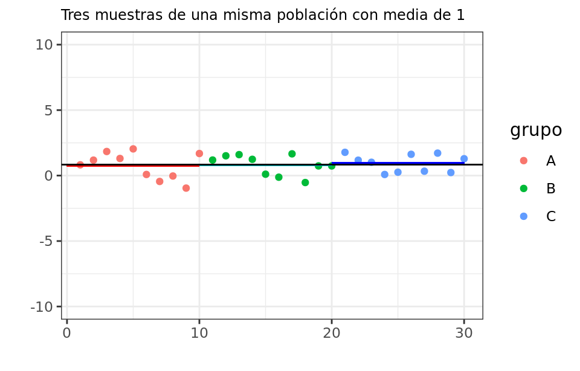
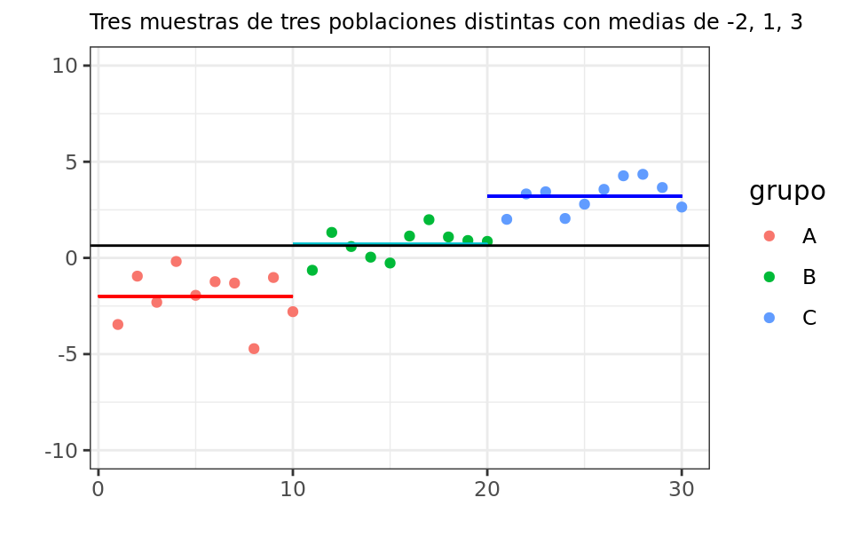
ANOVA: un factor
\[y_{ij} = \mu_j + \varepsilon_{ij}, \quad \varepsilon_{ij} \sim N (0, \sigma^2)\]
¿Cómo calcular la varianza explicada por la variable de grupo (la variabilidad de las medias de cada grupo) y la varianza no explicada por el grupo (el promedio de las varianzas dentro de cada grupo, intrínseca a los datos)?
La variabilidad total (SST o VT) de la variable \(y\) se define como
\[SST = \displaystyle \sum_{l=1}^{n} \left(y_l - \overline{y} \right)^2 = \sum_{j=1}^{c} \sum_{i=1}^{n_j} \left(y_{ij} - \overline{y} \right)^2, \quad VT = \frac{1}{n} \sum_{j=1}^{c} \sum_{i=1}^{n_j} \left(y_{ij} - \overline{y} \right)^2\]
ANOVA: un factor
\[SST = \displaystyle \sum_{l=1}^{n} \left(y_l - \overline{y} \right)^2 = \sum_{j=1}^{c} \sum_{i=1}^{n_j} \left(y_{ij} - \overline{y} \right)^2, \quad VT = \frac{1}{n} \sum_{j=1}^{c} \sum_{i=1}^{n_j} \left(y_{ij} - \overline{y} \right)^2\]
A continuación añadimos y restamos dentro del paréntesis la misma cantidad (la media muestral de cada grupo \(\overline{y}_j\), estimación insesgada de \(\mu_j\))
\[\begin{eqnarray}\color{green}{SST} &=& \sum_{j=1}^{c} \sum_{i=1}^{n_j} \left(y_{ij} - \overline{y} \right)^2 = \sum_{j=1}^{c} \sum_{i=1}^{n_j} \left( \left(y_{ij} - \overline{y}_j \right) - \left(\overline{y}_j - \overline{y} \right) \right)^2 \nonumber \\ &=& \color{purple}{\sum_{j=1}^{c} \sum_{i=1}^{n_j} \left(y_{ij} - \overline{y}_j \right)^2} + \color{red}{\sum_{j=1}^{c} \sum_{i=1}^{n_j} \left(\overline{y}_j - \overline{y} \right)^2} - 2\sum_{j=1}^{c} \sum_{i=1}^{n_j} \left(y_{ij} - \overline{y}_j \right) \left(\overline{y}_j - \overline{y} \right) \nonumber \\ \color{green}{VT} &=& \color{purple}{\frac{1}{n}\sum_{j=1}^{c} \sum_{i=1}^{n_j} \left(y_{ij} - \overline{y}_j \right)^2} + \color{red}{\frac{1}{n}\sum_{j=1}^{c} \sum_{i=1}^{n_j} \left(\overline{y}_j - \overline{y} \right)^2} - \frac{2}{n}\sum_{j=1}^{c} \sum_{i=1}^{n_j} \left(y_{ij} - \overline{y}_j \right) \left(\overline{y}_j - \overline{y} \right) \end{eqnarray}\]
ANOVA: un factor
El segundo término es en realidad la variabilidad (ponderada) de las medias de los grupos (cómo fluctua la media entre los grupos)
\[\color{red}{\frac{1}{n}\sum_{j=1}^{c} \sum_{i=1}^{n_j} \left(\overline{y}_j - \overline{y} \right)^2 = \frac{1}{n}\sum_{j=1}^{c} n_j \left(\overline{y}_j - \overline{y} \right)^2 = \sum_{j=1}^{c} \frac{n_j}{n} \left(\overline{y}_j - \overline{y} \right)^2 }\]
ya que
\[\overline{\overline{y}_j} = \frac{1}{c} \sum_{j=1}^{c} \overline{y}_j = \sum_{j=1}^{c} \sum_{i=1}^{n_j} \frac{1}{c* n_{j}} y_{ij} = \frac{1}{n}\sum_{l}^{n} y_{l} = \overline{y}\]
Es la variabilidad explicada por los grupos (variabilidad - de la media - ENTRE grupos).
ANOVA: un factor
El primer término es en realidad la media de la variabilidad \(s_{j}^2\) DENTRO de cada grupo (el promedio de la variabilidad intragrupo)
\[\color{purple}{\frac{1}{n}\sum_{j=1}^{c} \sum_{i=1}^{n_j} \left(y_{ij} - \overline{y}_j \right)^2 = \frac{1}{n}\sum_{j=1}^{c} \sum_{i=1}^{n_j} \frac{n_j}{n_j} \left(y_{ij} - \overline{y}_j \right)^2 = \sum_{j=1}^{c} \frac{n_j}{n} s_{j}^2} := \hat{\sigma}^2\]
lo que hemos denominado antes \(\hat{\sigma}^2 = \frac{1}{n}\sum_{j=1}^{c} \sum_{i=1}^{n_j} \hat{\varepsilon_{ij}}^2\) que se relaciona con la varianza residual (estimada) como \(\hat{\sigma}^2 = \frac{n-c}{n} \hat{s}_{r}^{2}\).
Es la variabilidad NO explicada (residual) por el factor (promedio - de manera ponderada - de la variabilidad DENTRO de cada grupo)
ANOVA: un factor
Por tanto, dado que el modelo es lineal, la variabilidad o información total se puede descomponer como varianza explicada (VE o suma cuadrados explicada - SSE) más varianza no explicada (VR o suma cuadrados residuales - SSR)
\[SST = SSE + SSR, \quad VT = VE + VR\]
\[VE = \sum_{j=1}^{c}\frac{ n_j}{n} \left(\overline{y}_j - \overline{y} \right)^2, \quad VR = \frac{1}{n}\sum_{j=1}^{c} \sum_{i=1}^{n_j} \hat{\varepsilon}_{ij}^2 = \hat{\sigma}^2 = \frac{n-c}{n} \hat{s}_{r}^{2}\]
Así el objetivo será construir un estadístico para cuantificar si \(VE\) se aleja mucho de \(VR\) o no.
ANOVA: un factor
Se puede demostrar como
\[\frac{SSE}{\sigma^2} \sim \chi^2_{c-1}, \quad \frac{SSR}{\sigma^2} \sim \chi^2_{n-c} \quad \Rightarrow \quad F = \frac{\frac{SSE}{(c-1)\sigma^2}}{\frac{SSR}{(n-c)\sigma^2}} = \frac{\frac{SSE}{c-1}}{\frac{SSR}{n-c}} = \frac{\hat{s}_{e}^2}{\frac{n*VR}{n-c}} = \frac{\hat{s}_{e}^2}{\hat{s}_{r}^2} \sim F_{c-1, n-c}\]
usando que el cociente (ponderado por sus grados de libertad) de dos \(\chi^2\) sigue una distribución conocida, calculando lo que se conoce como estadístico F.
Si te fijas
\(\hat{s}_{e}^2 = \frac{SSE}{c-1} = \frac{n * VE}{c-1} = \frac{1}{c-1}\sum_{j=1}^{c}n_j \left(\overline{y}_j - \overline{y} \right)^2\) es la varianza explicada (estimada) calculada como una cuasivarianza ponderada.
\(\hat{s}_{r}^2 = \frac{SSR}{n-c} = \frac{n*VR}{n-c}\) es la varianza residual (estimada) mencionada anteriormente
ANOVA: un factor
Vamos a ver el ejemplo en R haciendo uso de la función aov()
data = ...: la base de datosformula = ...: indicado comovar_objetivo ~ factor(donde~representa un “vs”)|> summary(): para obtener un resumen
ANOVA: un factor
Df Sum Sq Mean Sq F value Pr(>F)
asignatura 1 564.5 564.5 2173 <2e-16 ***
Residuals 998 259.2 0.3
---
Signif. codes: 0 '***' 0.001 '**' 0.01 '*' 0.05 '.' 0.1 ' ' 1Si analizamos por filas tenemos
asignatura: la parte correspondiente la variabilidad explicada o entre gruposResiduals: la parte correspondiente la variabilidad no explicada o intra grupos
ANOVA: un factor
Df Sum Sq Mean Sq F value Pr(>F)
asignatura 1 564.5 564.5 2173 <2e-16 ***
Residuals 998 259.2 0.3
---
Signif. codes: 0 '***' 0.001 '**' 0.01 '*' 0.05 '.' 0.1 ' ' 1Df: degrees of freedom (grados de libertad), definidos como \(c-1\) para \(SSE/VE\) (ya que \(\frac{SSE}{\sigma^2} \sim \chi^2_{c-1}\)) y \(n-c\) (ya que \(\frac{SSR}{\sigma^2} \sim \chi^2_{n-c}\)).Sum Sq: sum of squares (suma de cuadrados), es decir, \(SSE\) y \(SSR\).Mean Sq: mean of squares (media de la suma de cuadrados, ponderado porDf), es decir, \(\hat{s}_{e}^{2}\) y \(\hat{s}_{r}^{2}\).F valueyPr(>F): valor del estadístico \(F = \frac{\hat{s}_{e}^{2}}{\hat{s}_{r}^{2}}\) y p-valor del contraste
En este caso: rechazamos la hipótesis nula de igualdad de medias, es decir, existen evidencias suficientes para concluir que el grupo tiene un efecto en las notas
Caso real: crecimiento bebés
Vamos a usar la tabla leche_materna.csv que recopila los resultados obtenidos de 2 tratamientos de leche en polvo distintos para el crecimiento de bebés prematuros (de los que se miden su peso tras el tratamiento, partiendo de unas características similares, incluyendo además un grupo control).
¿El objetivo? Comprobar si alguno de los tratamientos fue efectivo.
Caso real: crecimiento bebés
# A tibble: 30 × 2
weight group
<dbl> <chr>
1 4.17 ctrl
2 5.58 ctrl
3 5.18 ctrl
4 6.11 ctrl
5 4.5 ctrl
6 4.61 ctrl
7 5.17 ctrl
8 4.53 ctrl
9 5.33 ctrl
10 5.14 ctrl
# ℹ 20 more rows¿Cómo formulamos el ANOVA?
\[y_{ij} = \mu_j + \varepsilon_{ij}, \quad y_{ij} = \text{peso del niño i del grupo j}, \quad j=1,2,3 \text{ (control, trt1, trt2)}\]
donde \(\mu_j\) representa la media de peso de cada grupo, cuyo estimador insesgado es \(\overline{y}_{j}\)
Caso real: crecimiento bebés
¿La hipótesis nula?
\[H_0:~\mu_1 = \mu_2 = \mu_3 \quad \text{(no diferencias entre tratamientos y control)}, \quad H_1:~existe\]
¿Existe una asociación entre el tratamiento/control y el peso?
Caso real: crecimiento bebés
Desde un punto de vista descriptivo, ¿cómo resumirlo numérica y gráficamente?
Caso real: crecimiento bebés
Código
ggplot(datos |>
rowid_to_column(var = "id") |>
mutate("mean_weight" = mean(weight), .by = group)) +
geom_point(aes(x = id, y = weight, color = group),
alpha = 0.5, size = 4) +
geom_line(aes(x = id, y = mean_weight, color = group),
linewidth = 2) +
scale_y_continuous(limits = c(2.5, 7.5)) +
MetBrewer::scale_color_met_d(palette_name = "Renoir") +
theme_minimal()Caso real: crecimiento bebés
Df Sum Sq Mean Sq F value Pr(>F)
group 2 3.766 1.8832 4.846 0.0159 *
Residuals 27 10.492 0.3886
---
Signif. codes: 0 '***' 0.001 '**' 0.01 '*' 0.05 '.' 0.1 ' ' 1El resultado del ANOVA de un factor (one-way ANOVA) es el siguiente:
Si analizamos por filas tenemos
group: la parte correspondiente la variabilidad explicada o entre grupos de tratamientoResiduals: la parte correspondiente la variabilidad no explicada o intra grupos
Caso real: crecimiento bebés
Df Sum Sq Mean Sq F value Pr(>F)
group 2 3.766 1.8832 4.846 0.0159 *
Residuals 27 10.492 0.3886
---
Signif. codes: 0 '***' 0.001 '**' 0.01 '*' 0.05 '.' 0.1 ' ' 1Si analizamos por columnas tenemos
Df: tenemos 2 grados de libertad (3 grupos - 1) para la varianza explicada y 27 grados de libertad (30 - 3 grupos) para la varianza no explicada.Sum Sq: \(SSE = 3.766\) y \(SSR = 10.492\),Mean Sq: \(\hat{s}_{e}^{2} = 1.8832\) y \(\hat{s}_{r}^{2} = 0.3886\).F valueyPr(>F): valor del estadístico \(F = \frac{\hat{s}_{e}^{2}}{\hat{s}_{r}^{2}} = \frac{1.8832}{0.3886} = 4.846\) y p-valor
Rechazamos la hipótesis nula: existen evidencias para concluir que el tratamiento tiene un efecto en el peso
Caso real: crecimiento bebés
Df Sum Sq Mean Sq F value Pr(>F)
group 2 3.766 1.8832 4.846 0.0159 *
Residuals 27 10.492 0.3886
---
Signif. codes: 0 '***' 0.001 '**' 0.01 '*' 0.05 '.' 0.1 ' ' 1¿El problema?
Sabemos que el tratamiento (bien sea “real” bien sea el grupo control) tiene un efecto (al menos estadístico) y que se observan medias distintas.
¿Pero cuáles son distintas 2 a 2? ¿Son distintas entre los tratamientos? ¿Son distintas tratamientos vs control? ¿Solo uno de los tratamientos es distinto o ambos?
En este caso necesitamos 3 comparaciones.
Pruebas post-hoc
Tras obtener un resultado significativo en un ANOVA el siguiente objetivo sería determinar cuál de los grupos bajo estudio contribuye a esta significación estadística.
Pero como hemos explicado, la estrategia de aplicar repetidamente pruebas t-Student puede conllevar un aumento desmesurado de la probabilidad de cometer un error de Tipo I (detectar diferencias por pura aleatoriedad)
Alguno de los métodos post-hoc más comunes (ver más) son Bonferroni, Tukey y Dunnett.
post-hoc: bonferroni
El método de corrección Bonferroni ya lo hemos explicado anteriormente y para implementarlo basta con usar pairwise.t.test()
# `pool.sd = FALSE` implica que, para cada comparativa, se calcula una desv en cada grupo
# `pool.sd = TRUE` --> la desviación estándar agrupada es un promedio ponderado de las sd de
# dos o más grupos, tal que las sd individuales se promedian, con más "peso" dado a
# tamaños de muestra más grandes. solo usar cuando los tamaños de cada grupo sean muy distintos
pairwise.t.test(datos$weight, datos$group, p.adjust.method = "bonferroni", pool.sd = FALSE)
Pairwise comparisons using t tests with non-pooled SD
data: datos$weight and datos$group
ctrl trt1
trt1 0.751 -
trt2 0.144 0.028
P value adjustment method: bonferroni ctrl vs trt 1: p-valor ajustado 0.751 –> sin diferencias significativas
ctrl vs trt 2: p-valor ajustado 0.144 –> sin diferencias significativas
trt 1 vs trt 2: p-valor ajustado 0.028 –> dif sig de los tratamientos
Pruebas post-hoc
- Bonferroni:
- Ventajas: simplicidad y no paramétrico
- Desventajas: al intentar controlar tanto error tipo I (rechazar \(H_0\) sin que existan diferencias) es un método muy conservador -> cuesta mucho que se rechace \(H_0\) -> alta tasa de errores tipo II según aumentan comparaciones
Para evitar los problemas de Bonferroni cuando hay un alto número de comparaciones existe una alternativa conocida como test de Tukey.
Tukey multiple comparisons of means
95% family-wise confidence level
Fit: aov(formula = weight ~ group, data = datos)
$group
diff lwr upr p adj
trt1-ctrl -0.371 -1.0622161 0.3202161 0.3908711
trt2-ctrl 0.494 -0.1972161 1.1852161 0.1979960
trt2-trt1 0.865 0.1737839 1.5562161 0.0120064post-hoc: Tukey
Tukey multiple comparisons of means
95% family-wise confidence level
Fit: aov(formula = weight ~ group, data = datos)
$group
diff lwr upr p adj
trt1-ctrl -0.371 -1.0622161 0.3202161 0.3908711
trt2-ctrl 0.494 -0.1972161 1.1852161 0.1979960
trt2-trt1 0.865 0.1737839 1.5562161 0.0120064- Tukey:
- Ventajas: controla eficazmente la tasa de error tipo I, muy útil para muchas comparaciones y mayor poder estadístico* vs Bonferroni
- Desventajas: sensible a valores atípicos y es paramétrico (requiere normalidad, grupos de tamaño similar e igualdad de varianzas)
Poder o potencia estadística: probabilidad de rechazar \(H_0\) cuando dicha hipótesis es falsa (probabilidad de no cometer un error del tipo II).
post-hoc: Dunnet
En muchas ocasiones no siempre queremos comparaciones 2 a 2 indistintamente sino que querremos confrontar el resto de grupos respecto a un grupo control (en nuestro caso: 2 tratamientos vs control, no los tratamientos entre sí).
Para ello disponemos del test de Dunnet
\[H_0:~\mu_{tr_{j}} = \mu_{ctrl}, \quad H_1:~\mu_{tr_{j}} \neq \mu_{ctrl}\]
- Dunnet:
- Ventajas: el contraste con mayor potencia cuando se trata de comaprar contra un grupo contorl
- Desventajas: paramétrico (requiere normalidad, igualdad de varianzas e independencia entre grupos)
Pruebas post-hoc
Para implementarlo primero chequeamos igualdad de varianzas entre los grupos (por ejemplo, con car::leveneTest())
Levene's Test for Homogeneity of Variance (center = median)
Df F value Pr(>F)
group 2 1.1192 0.3412
27 Y luego DunnettTest() del paquete {DescTools}
Dunnett's test for comparing several treatments with a control :
95% family-wise confidence level
$ctrl
diff lwr.ci upr.ci pval
trt1-ctrl -0.371 -1.0215695 0.2795695 0.3227
trt2-ctrl 0.494 -0.1565695 1.1445695 0.1535
---
Signif. codes: 0 '***' 0.001 '**' 0.01 '*' 0.05 '.' 0.1 ' ' 1Obtenemos que no hay dif. sig. entre ctrl y tratamientos
💻 Tu turno
Intenta realizar los siguientes ejercicios sin mirar las soluciones
Vamos a usar el fichero cushing_syndrome.csv que contiene datos del síndrome de Cushing, un trastorno hormonal asociado con un alto nivel de cortisol. Para cada individuo de la muestra tenemos recopiladas las tasas de excreción urinaria de dos metabolitos de esteroides (tetrahidrocortisona y pregnanetriol). La variable type recopila el tipo de síndrome: adenoma (a), hiperplasia bilateral (b), carcinoma (c) y desconocido (u)
📝 Carga el fichero cushing_syndrome.csv
# A tibble: 27 × 3
tetrahydrocortisone pregnanetriol type
<dbl> <dbl> <chr>
1 3.1 11.7 a
2 3 1.3 a
3 1.9 0.1 a
4 3.8 0.04 a
5 4.1 1.1 a
6 1.9 0.4 a
7 8.3 1 b
8 3.8 0.2 b
9 3.9 0.6 b
10 7.8 1.2 b
# ℹ 17 more rows📝 Calcula la media global de tetrahydrocortisone. Calcula la media para cada uno de los tipos de síndrome así como su tamaño muestral
📝 Calcula la varianza global de tetrahydrocortisone. Calcula la varianza para cada uno de los tipos de síndrome así como la varianza ponderada (cada varianza de grupo multiplicada por su proporción muestral)
📝 Visualiza con boxplot tetrahydrocortisone para cada grupo
📝 Visualiza los puntos de tetrahydrocortisone junto con sus medias distinguiendo para cada uno de los grupos
Código
ggplot(datos |>
rowid_to_column(var = "id") |>
mutate("mean" = mean(tetrahydrocortisone), .by = type)) +
geom_point(aes(x = id, y = tetrahydrocortisone, color = type),
size = 3, alpha = 0.6) +
geom_line(aes(x = id, y = mean, color = type), linewidth = 2) +
MetBrewer::scale_color_met_d(palette_name = "Renoir") +
theme_minimal()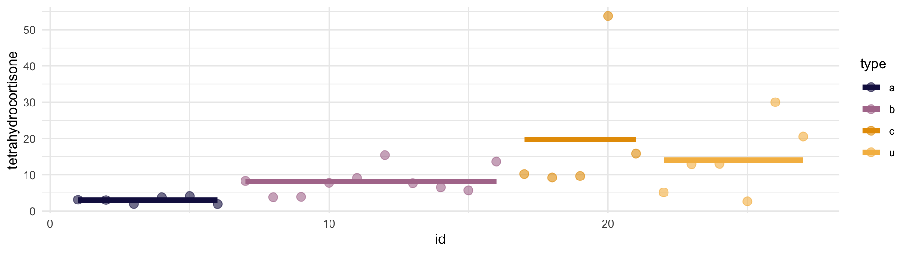
📝 Plantea la formulación del ANOVA tetrahydrocortisone vs type. Ejecuta el código que consideres y saca conclusiones: ¿hay diferencias significativas de dicha hormona entre los síndromes con \(\alpha = 0.05\) y \(\alpha = 0.01\)?
📝 En los casos en los que se haya obtenido una dif significativa, ¿cuáles son diferentes entre sí? Haz pruebas post-hoc usando Bonferroni y Tukey (realizando comprobaciones previas que consideres). ¿Cuál sería más adecuado?
Código
pairwise.t.test(datos$tetrahydrocortisone, datos$type, p.adjust.method = "bonferroni", pool.sd = FALSE)
# solo diferencia significativas a vs b (0.01 p-valor ajustado)
# ¿varianzas iguales?
car::leveneTest(datos$tetrahydrocortisone ~ datos$type)
aov(data = datos, formula = tetrahydrocortisone ~ type) |>
TukeyHSD()
# solo dif significativa c vs a
# dif medias = 16.753, IC bajo de 0.65, IC alto de 32.85
# p-valor ajustado 0.039
# en este caso mejor bonferroni porque a) no hay tamaños iguales y b) no son normales📝 Por último vamos a considerar que el tipo "a" es nuestro grupo de referencia/control. ¿Cómo comparar todas vs control en lugar de todas vs todas (asumimos que son independientes)?
Código
# ¿varianzas iguales?
car::leveneTest(datos$tetrahydrocortisone ~ datos$type)
# ¿Normalidad? ==> no parece
olsrr::ols_test_normality(datos$tetrahydrocortisone)
# Dunnet test
DescTools::DunnettTest(x = datos$tetrahydrocortisone, g = datos$type)
# nos devuelve que el único sig diferente al control es c (como antes)
# resultados "con pinzas" ya que no cumple la normalidad de momentoClase 4: análisis de la varianza
Asociación cuali vs cuanti: análisis de la varianza (4 de febrero de 2025)
ANOVA: dos factores
Repaso entrega I
Caso práctico descriptiva: anscombe
Casos prácticos cuali vs cuali:
Casos prácticos ANOVA:
Javier Álvarez Liébana • Grado en Ciencia de Datos Aplicada (UCM) • curso 2024-2025